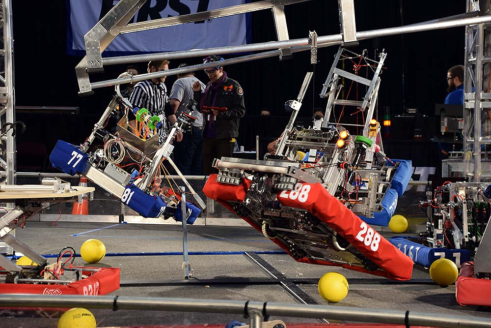
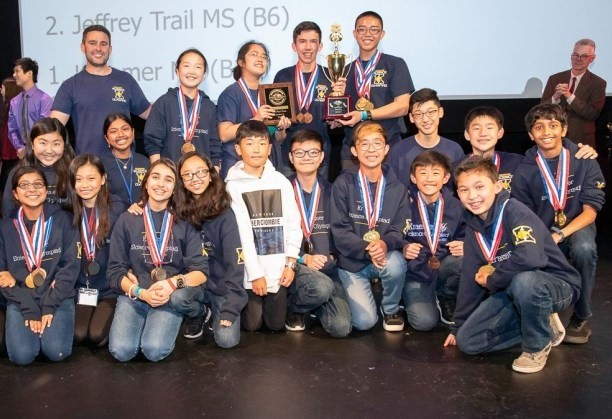
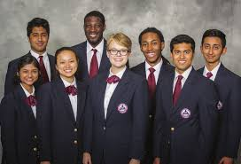

FRC Robotics
Technology, Engineering
Ages 14-18
Expensive
The FIRST Robotics Competition is an international high school robotics competition. Each year, teams of high school students, coaches, and mentors work during a six-week period to build robots capable of competing in that year's game that weigh up to 125 pounds

Science Olympiad
Science, Mathematics
Ages 10-18
Fair
Science Olympiad is an American team competition in which students compete in 23 events pertaining to various scientific disciplines, including earth science, biology, chemistry, physics, and engineering. Over 7,800 middle school and high school teams from 50 U.S. states compete each year

HOSA
Medical, Health
Ages 14-18
Fair
HOSA – Future Health Professionals, formerly known as Health Occupations Students of America, is an international career and technical student organization endorsed by the U.S. Department of Education and the Health Science Technology Education Division of ACTE.
